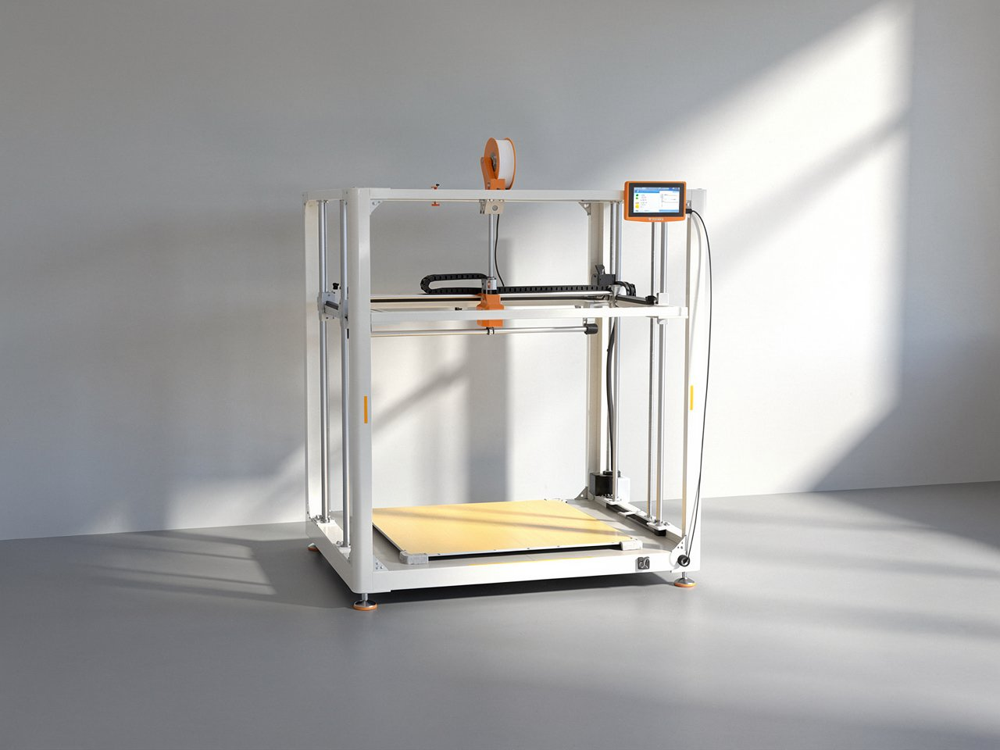
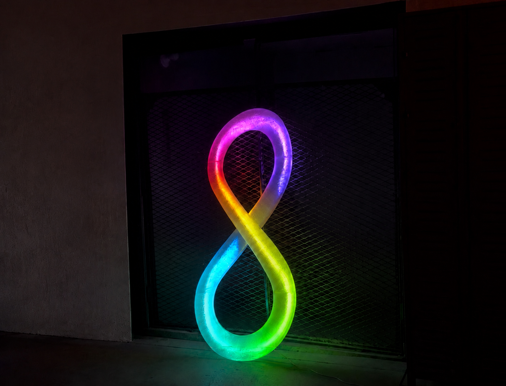
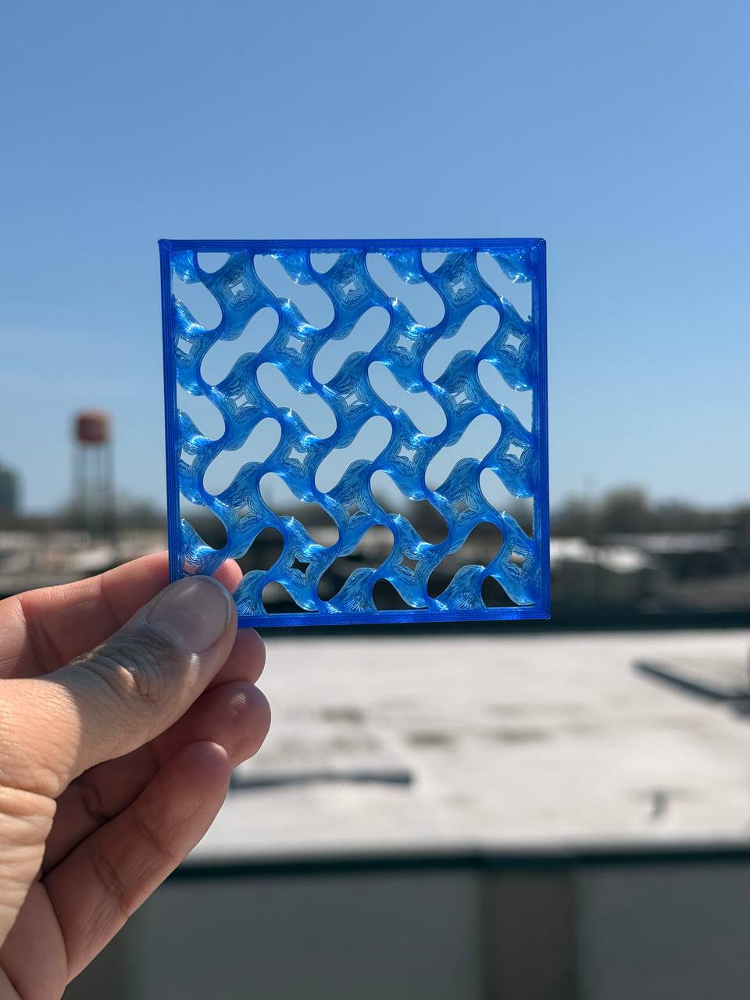

Partemis 01
Large-format printing at furniture scale
Large Format FDM · In service since 2026

Most 3D printing is small. Parts come off a desktop machine at palm size, and anything larger gets cut into pieces and glued back together.
Partemis 01 removes that step. At 800 × 800 × 1000 mm it prints furniture-scale objects in a single run — no seams, no glue-ups, no hidden joints to fail later.

Why single-piece matters
A glued assembly is only as strong as its weakest joint, and the joint is almost always where it breaks. For signage, props and furniture — things that get carried, mounted, leaned on and knocked — that seam is a liability as much as a cosmetic problem.
Printing the whole object at once means the part has continuous material throughout. Nothing to delaminate, nothing to realign during assembly, and no filler-and-sand cycle before finishing.


Structural walls, not shells
The machine runs a wide nozzle that lays down a 2.5 mm wall in a single pass. That is wide enough to be structural on its own, so parts don't depend on internal infill to carry load.
The practical effect is fewer passes, less material, shorter print time, and a part that behaves like a solid object rather than a hollow shell with a lattice inside it.


What it's for
Trade-show and retail builds, illuminated signage, event and brand activation props, furniture-scale prototypes, and architectural mockups — work that is too large for a desktop machine and too bespoke to justify tooling.
Because there's no mold and no minimum order, a one-off costs what a one-off should. The first part is the deliverable, not a prototype on the way to a production run.